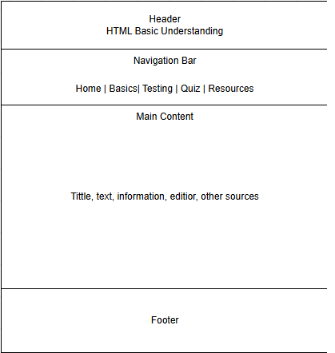
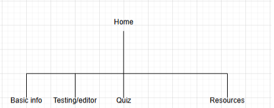

1. Project Overview
Application Description & Purpose:
My website will help teach my peers to learn HTML and the basics to help them learn it for their own needs. As well as practice and get a feel for what it's like to use it.
Intended Users:
Students are the target, but anyone who wants a basic course in HTML could use it.
Overview of Website Content:
Basic information on HTML, practice using HTML, a little quiz for practice, as well as more places to learn more about HTML, CSS, and Java.
2. Client Information
Client Name: Jacob Gordan
Organization/Business: North Carolina State University
Email Address: jgordan7@ncsu.edu
Phone Number: [private]
3. Wireframe

4. Site Map
